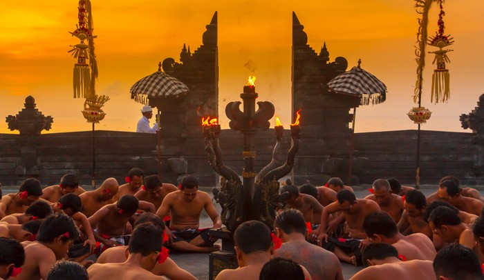
Tari Kecak
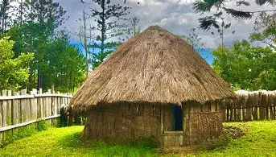
Rumah Honai

Angklung
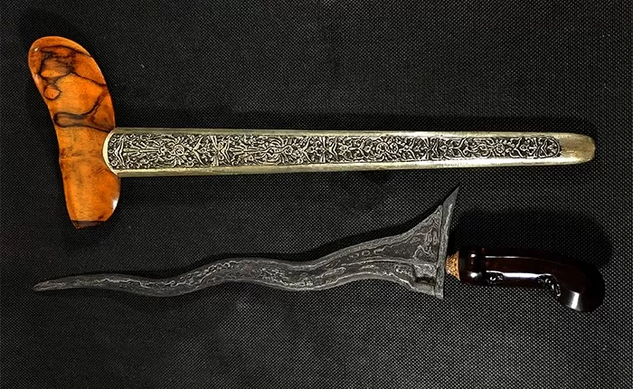
Keris
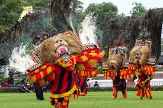
Reog Ponorogo
Ruumah Tongkonan
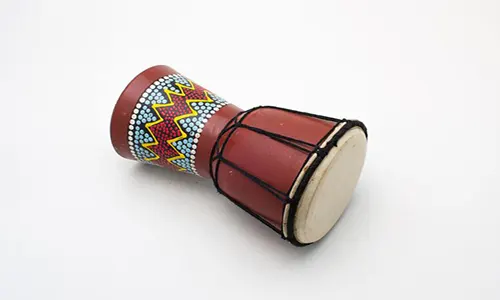
Tifa
Kujang

Tari Kuda Lumping

Ngaben

Sasando
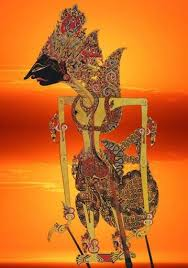
Lukisan Wayang
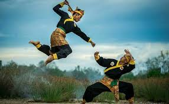
Pencak Silat
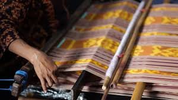
Tenun Ikat
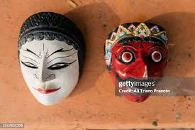
Topeng Betawi
Kecapi

Rambu Solo
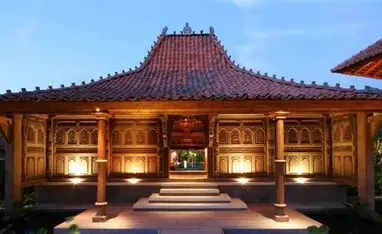
Rumah Joglo

Gamelan

Badik
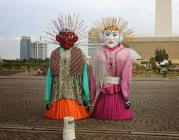
Ondel Ondel
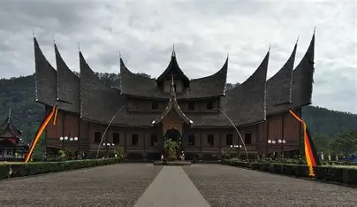
Rumah Gadang
Batik

Rencong
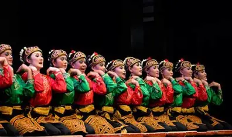
Tari Saman
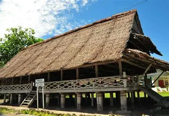
Rumah Lamin
Kolintang
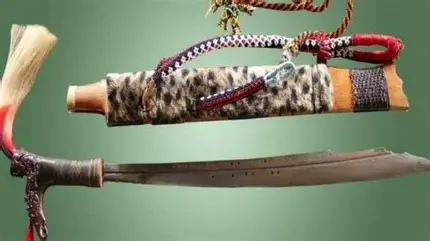
Mandau
Upacara Tabuik
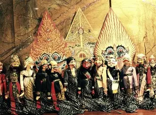
Wayang Golek
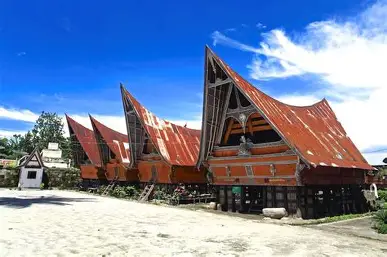
Rumah Bolon
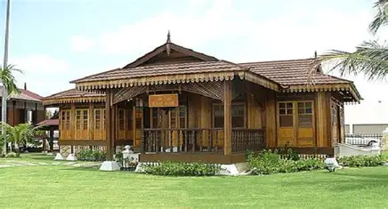
Rumah Melayu
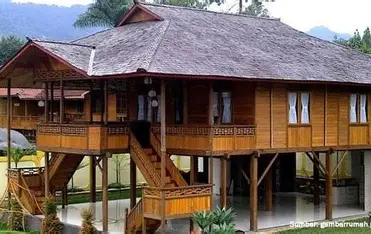
Rumah Walewangko
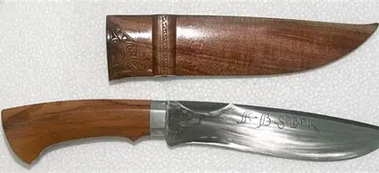
Belati Badui
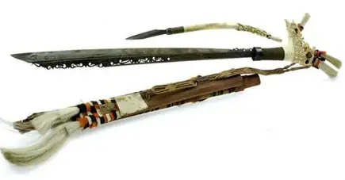
Parang Ilang

Klewang
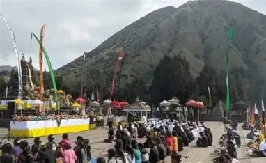
Upacara Kasada
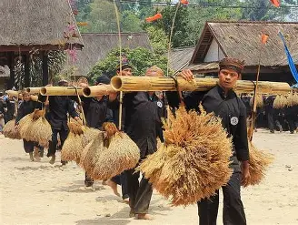
Seren Taun
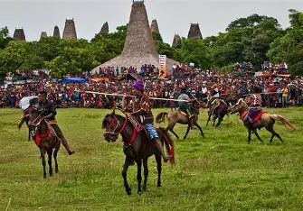
Pasola
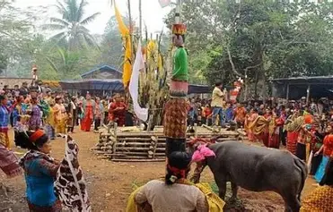
Tiwah
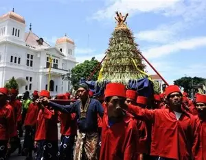
Sekaten
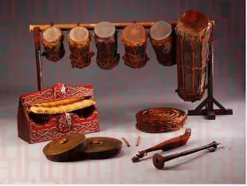
Gondang Batak
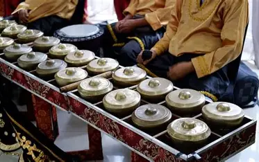